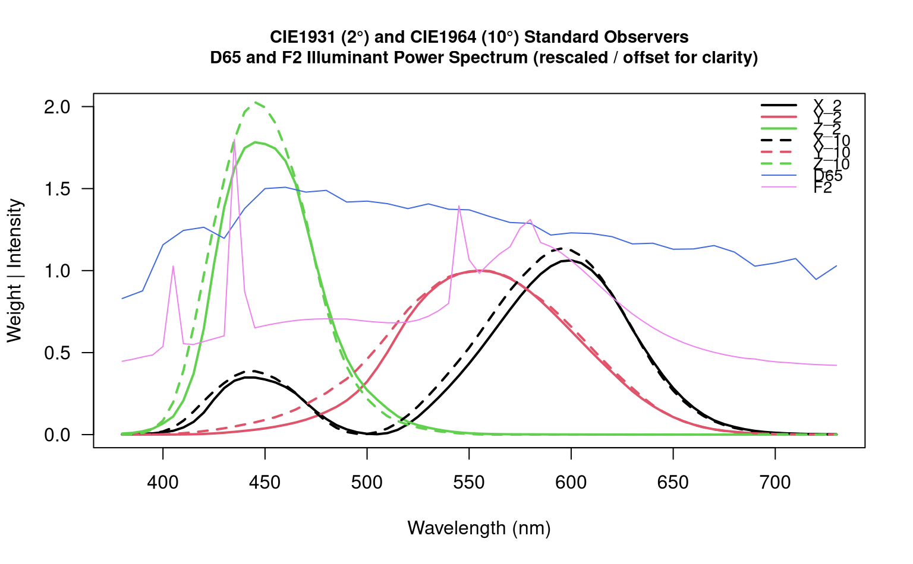

D65 and F2 standard illuminant spectral power distributions, CIE1931 Standard Observer (2 degree), and CIE1964 Supplemental Standard Observer (10 degree)
data(spectral.reference)An object of class data.frame with 71 rows and 9 columns.
Marcus, R.T. (1998). The Measurement of Color. In K. Nassau (Ed.), Color for Science, Art, and Technology (pp. 32-96). North-Holland.
CIE Colorimetry – Part 1: CIE standard colorimetric observers. CIES014-1/E:2006 – ISO 11664-1:2007(E)
CIE. (n.d.). CIE 15:2004 Tables Data. Retrieved from https://law.resource.org/pub/us/cfr/ibr/003/cie.15.2004.tables.xls
data("spectral.reference")
matplot(
x = spectral.reference[, 1],
y = spectral.reference[, c('xbar_2', 'ybar_2', 'zbar_2')],
ylim = c(0, 2),
type = 'l',
lwd = 2,
lty = 1,
las = 1,
xlab = 'Wavelength (nm)',
ylab = 'Weight | Intensity',
main = "CIE1931 (2\u00B0) and CIE1964 (10\u00B0) Standard Observers
D65 and F2 Illuminant Power Spectrum (rescaled / offset for clarity)",
cex.main = 0.9
)
matlines(
x = spectral.reference[, 1],
y = spectral.reference[, c('xbar_10', 'ybar_10', 'zbar_10')],
type = 'l',
lwd = 2,
lty = 2,
las = 1,
xlab = 'Wavelength (nm)',
ylab = 'Weight | Intensity',
main = 'CIE1931 Standard Observer Weights\nD65 Standard Illuminant'
)
lines(
x = spectral.reference$w,
y = (spectral.reference$D65 / 100) + 0.33,
lty = 1,
col = 'royalblue'
)
lines(
x = spectral.reference$w,
y = (spectral.reference$F2 / 25) + 0.4,
lty = 1,
col = 'violet'
)
legend(
'topright',
legend = c('X_2', 'Y_2', 'Z_2', 'X_10', 'Y_10', 'Z_10', 'D65', 'F2'),
col = c(1, 2, 3, 1, 2, 3, 'royalblue', 'violet'),
lwd = c(2, 2, 2, 2, 2, 2, 1, 1),
lty = c(1, 1, 1, 2, 2, 2, 1, 1),
bty = 'n',
cex = 0.85
)
